기계설계산업기사 (2017-05-07 기출문제)
1과목: 기계가공법 및 안전관리
1. 다이얼 게이지 기어의 백 래시(back lash)로 인해 발생하는 오차는?
- 인접 오차
- 지시 오차
- 진동 오차
- 되돌림 오차
(정답률: 77%)

2. 트위스트 드릴은 절삭날의 각도가 중심에 가까울수록 절삭작용이 나쁘게 되기 때문에 이를 개선하기 위해 드릴의 웨브부분을 연삭하는 것은?
- 디닝 (thinning)
- 트루잉 (truing)
- 드레싱 (dressing)
- 글레이징 (glazing)
(정답률: 64%)
3. 공기 마이크로미터에 대한 설명으로 틀린 것은?
- 압축 공기원이 필요하다.
- 비교 측정기로 1개의 마스터로 측정이 가능하다.
- 타원, 테이퍼, 편심 등의 측정을 간단히 할 수 있다.
- 확대 기구에 기계적 요소가 없기 때문에 장시간 고정도를 유지할 수 있다.
(정답률: 64%)
4. 다음 그림과 같이 피측정물의 구면을 측정할 때 다이얼 게이지의 눈금이 0.5mm 움직이면 구면의 반지름[mm]은 얼마인가? (단, 다이얼 게이지 측정자로부터 구면계의 다리까지의 거리는 20mm이다)
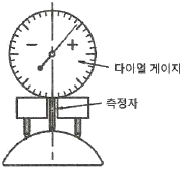
- 100.25
- 200.25
- 300.25
- 400.25
(정답률: 44%)
5. 일반적으로 센터드릴에서 사용되는 각도가 아닌 것은?
- 45°
- 60°
- 75°
- 90°
(정답률: 63%)
6. 산화알루미늄(Al2O3)분말을 주성분으로 마그네슘(Mg), 규소(Si)등의 산화물과 소량의 다른 원소를 첨가하여 소결한 절삭공구의 재료는?
- CBN
- 서멧
- 세라믹
- 다이아몬드
(정답률: 70%)
7. 밀링 머신에서 절삭공구를 고정하는데 사용되는 부속장치가 아닌 것은?
- 아버(arbor)
- 콜릿(collet)
- 새들(saddle)
- 어댑터(adapter)
(정답률: 70%)
8. 밀링 머신에서 테이블의 이송속도(f)를 구하는 식으로 옳은 것은? (단, fz : 1개의 날 당 이송[mm], z: 커터의 날 수, n : 커터의 회전수[rpm]이다.)(오류 신고가 접수된 문제입니다. 반드시 정답과 해설을 확인하시기 바랍니다.)
- f = f × z × n
- f = f2 × π × z × n
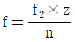
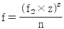
(정답률: 80%)
9. 풀리(pulley)의 보스(boss)에 키 홈을 가공하려 할 때 사용되는 공작기계는?
- 보링 머신
- 호빙 머신
- 드릴링 머신
- 브로칭 머신
(정답률: 68%)
10. 범용 밀링 머신으로 할 수 없는 가공은?
- T홈 가공
- 평면 가공
- 수나사 가공
- 더브테일 가공
(정답률: 69%)
11. 박스 지그(box jig)의 사용처로 옳은 것은?
- 드릴로 대량 생산을 할 때
- 선반으로 크랭크 절삭을 할 때
- 연삭기로 테이퍼 작업을 할 때
- 밀링으로 평면 절삭작업을 할 때
(정답률: 73%)
12. 선반에서 할 수 없는 작업은?
- 나사 가공
- 널링 가공
- 테이퍼 가공
- 스플라인 홈 가공
(정답률: 68%)
13. 수기가공 할 때 작업안전 수칙으로 옳은 것은?
- 바이스를 사용할 때는 조에 기름을 충분히 묻히고 사용한다.
- 드릴가공을 할 때에는 장갑을 착용하여 단단하고 위험한 칩으로부터 손을 보호한다.
- 금긋기 작업을 하는 이유는 주로 절단을 할 때에 절삭성이 좋아지기 위함이다.
- 탭 작업 시에는 칩이 원활하게 배출이 될 수 있도록 후퇴와 전진을 번갈아 가면서 점진적으로 수행한다.
(정답률: 65%)
14. 비교 측정하는 방식의 측정기는?
- 측장기
- 마이크로미터
- 다이얼 게이지
- 버니어 캘리퍼스
(정답률: 67%)
15. 미끄러짐을 방지하기 위한 손잡이나 외관을 좋게 하기 위하여 사용되는 다음 그림과 같은 선반 가공법은?
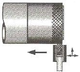
- 나사 가공
- 널링 가공
- 총형 가공
- 다듬질 가공
(정답률: 84%)
16. 연삭작업에 대한 설명으로 적절하지 않은 것은?
- 거친 연삭을 할 때에는 연삭 깊이를 얕게 주도록 한다.
- 연질 가공물을 연삭할 때는 결합도가 높은 숫돌이 적합하다.
- 다듬질 연삭을 할 때는 고운 입도의 연삭숫돌을 사용한다.
- 강의 거친 연삭에서 공작물 1회전마다 숫돌바퀴 폭의 1/2~3/4으로 이송한다.
(정답률: 55%)
17. 심압대의 편위량을 구하는 식으로 옳은 것은? (단, X : 심압대 편위량이다.)
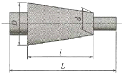
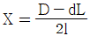
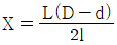
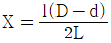
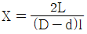
(정답률: 69%)
18. 센터리스 연삭에 대한 설명으로 틀린 것은?
- 가늘고 긴 가공물의 연삭에 적합하다.
- 긴 홈이 있는 가공물의 연삭에 적합하다.
- 다른 연삭기에 비해 연삭여유가 작아도 된다.
- 센터가 필요치 않아 센터 구멍을 가공할 필요가 없다.
(정답률: 63%)
19. 래핑작업에 사용하는 랩제의 종류가 아닌 것은?
- 흑연
- 산화크롬
- 탄화규소
- 산화알루미나
(정답률: 59%)
20. 입자를 이용한 가공법이 아닌 것은?
- 래핑
- 브로칭
- 배럴가공
- 액체 호닝
(정답률: 67%)
2과목: 기계제도
21. KS 기계제도에서 특수한 용도의 선으로 아주 굵은 실선을 사용해야 하는 경우는?
- 나사, 리벳 등의 위치를 명시하는데 사용한다.
- 외형선 및 숨은선의 연장을 표시하는데 사용한다.
- 평면이라는 것을 나타내는데 사용한다.
- 얇은 부분의 단면도시를 명시하는데 사용한다.
(정답률: 59%)
22. KS 용접 기호 중 현장 용접을 뜻하는 기호가 포함된 것은?
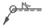
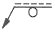
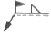
(정답률: 85%)
23. 제 3각법으로 나타낸 그림에서 정면도와 우측면도를 고려하여 가장 적합한 평면도는?
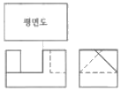
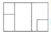
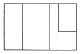
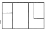
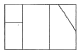
(정답률: 69%)
24. 스프링용 스테인리스 강선의 KS 재료 기호로 옳은 것은?
- STC
- STD
- STF
- STS
(정답률: 75%)
25. 그림과 같은 물체(끝이 잘린 원추)를 전개하고자 할 때 방사선법을 사용하지 않는다면 다음 중 가장 적합한 방법은?
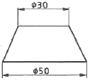
- 삼각형법
- 평행선법
- 종합선법
- 절단법
(정답률: 68%)
26. 다음과 같이 치수가 도시되었을 경우 그 의미로 옳은 것은?
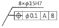
- 8개의 축이
 15에 공차등급이 H7이며, 원통도가 데이텀 A, B에 대하여
15에 공차등급이 H7이며, 원통도가 데이텀 A, B에 대하여  0.1을 만족해야 한다.
0.1을 만족해야 한다. - 8개의 구멍이
 15에 공차등급이 H7이며, 원통도가 데이텀 A, B에 대하여
15에 공차등급이 H7이며, 원통도가 데이텀 A, B에 대하여  0.1을 만족해야 한다.
0.1을 만족해야 한다. - 8개의 축이
 15에 공차등급이 H7이며, 위치도가 데이텀 A, B에 대하여
15에 공차등급이 H7이며, 위치도가 데이텀 A, B에 대하여  0.1을 만족해야 한다.
0.1을 만족해야 한다. - 8개의 구멍이
 15에 공차등급이 H7이며, 위치도가 데이텀 A, B에 대하여
15에 공차등급이 H7이며, 위치도가 데이텀 A, B에 대하여  0.1을 만족해야 한다.
0.1을 만족해야 한다.
(정답률: 80%)
27. 다음의 그림에서 A, B, C, D를 보고 화살표 방향에서 본 투상도를 옳게 짝지은 것은?
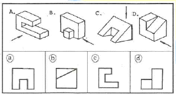
- A-ⓐ, B-ⓒ, C-ⓑ, D-ⓓ
- A-ⓒ, B-ⓓ, C-ⓐ, D-ⓑ
- A-ⓐ, B-ⓑ, C-ⓓ, D-ⓒ
- A-ⓓ, B-ⓒ, C-ⓐ, D-ⓑ
(정답률: 87%)
28. 베어링의 호칭번호가 62/28일 때 베어링 안지름은 몇 mm인가?
- 28
- 32
- 120
- 140
(정답률: 71%)
29. 다음 V벨트의 종류 중 단면의 크기가 가장 작은 것은?
- M형
- A형
- B형
- E형
(정답률: 75%)
30. 치수 보조 기호의 설명으로 틀린 것은?
- R15 : 반지름 15
- t15 : 판의 두께 15
- (15) : 비례척이 아닌 치수 15
- SR15 : 구의 반지름 15
(정답률: 87%)
31. 그림과 같은 입체도에서 화살표 방향이 정면일 경우 평면도로 가장 적합한 투상도는?
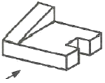
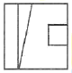
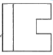
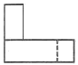
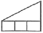
(정답률: 84%)
32. 제3각법에 대한 설명으로 틀린 것은?
- 눈→투상면→물체의 순으로 나타난다.
- 좌측면도는 정면도의 좌측에 그린다.
- 저면도는 우측면도의 아래에 그린다.
- 배면도는 우측면도의 우측에 그린다.
(정답률: 73%)
33. 가공방법의 약호 중 래핑가공을 나타낸 것은?
- FL
- FR
- FS
- FF
(정답률: 63%)
34. 스프링 도시 방법에 대한 설명으로 틀린 것은?
- 코일 스프링, 벌류트 스프링은 일반적으로 무하중 상태에서 그린다.
- 겹판 스프링은 일반적으로 스프링 판이 수평인 상태에서 그린다.
- 요목표에 단서가 없는 코일 스프링 및 벌류트 스프링은 모두 왼쪽으로 감긴 것을 나타낸다.
- 스프링 종류 및 모양만을 간략도로 나타내는 경우에는 스프링 재료의 중심선만을 굵은 실선으로 그린다.
(정답률: 72%)
35. 기하공차를 나타내는데 있어서 대상면의 표면은 0.1mm만큼 떨어진 두 개의 평행한 평면 사이에 있어야 한다는 것을 나타내는 것은?
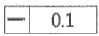
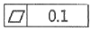
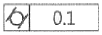
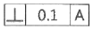
(정답률: 76%)
36. 배관 결합 방식의 표현으로 옳지 않은 것은?
 일반 결합
일반 결합 용접식 결합
용접식 결합 플랜지식 결합
플랜지식 결합 유니언식 결합
유니언식 결합
(정답률: 59%)
37. 도면에 치수를 기입하는 방법을 설명한 것 중 옳지 않은 것은?
- 특별히 명시하지 않는 한, 그 도면에 도시된 대상물의 다듬질 치수를 기입한다.
- 길이의 단위는 mm이고, 도면에는 반드시 단위를 기입한다.
- 각도의 단위로는 일반적으로 도(°)를 사용하고, 필요한 경우 분(') 및 초(”)를 병용할 수 있다.
- 치수는 될 수 있는 대로 주투상도에 집중해서 기입한다.
(정답률: 70%)
38. 기준치수가 50mm이고, 최대허용치수 50.015mm이며, 최소 허용치수 49.990mm일 때 치수공차는 몇 mm 인가?
- 0.025
- 0.015
- 0.0⑤
- 0.010
(정답률: 81%)
39. 가는 1점 쇄선의 용도가 아닌 것은?
- 도형의 중심을 표시하는데 쓰인다.
- 수면, 유면 등의 위치를 표시하는데 쓰인다.
- 중심이 이동한 중심궤적을 표시하는데 쓰인다.
- 되풀이하는 도형의 피치를 취하는 기준을 표시하는데 쓰인다.
(정답률: 69%)
40. 나사가 "M50x2 - 6H" 로 표시되어쓸 때 이 나사에 대한 설명 중 틀린 것은?
- 미터 가는 나사이다.
- 암나사 등급 6이다.
- 피치 2mm이다.
- 왼 나사이다.
(정답률: 79%)
3과목: 기계설계 및 기계재료
41. 상온에서 순철(α철)의 격자구조는?
- FCC
- CPH
- BCC
- HCP
(정답률: 58%)
42. 백주철을 고온에서 장시간 열처리하여 시멘타이트 조직을 분해하거나 소실시켜 인성 또는 연성을 개선한 주철은?
- 가단 주철
- 칠드 주철
- 합금 주철
- 구상흑연 주철
(정답률: 65%)
43. 강의 표면에 붕소(B)를 침투시키는 처리방법은?
- 세라다이징
- 칼로라이징
- 크로마이징
- 보로나이징
(정답률: 82%)
44. 구리 및 구리합금에 관한 설명으로 틀린 것은?
- Cu의 용융점은 약 1083℃이다.
- 문쯔메탈은 60%Cu + 40%Sn 합금이다.
- 유연하고 전연성이 좋으므로 가공이 용이하다.
- 부식성 물질이 용존하는 수용액 내에 있는 황동은 탈아연 현상이 나타난다.
(정답률: 56%)
45. 고속도강을 담금질 한 후 뜨임하게 되면 일어나는 현상은?
- 경년현상이 일어난다.
- 자연균열이 일어난다.
- 2차경화가 일어난다.
- 응력부식균열이 일어난다.
(정답률: 64%)
46. 플라스틱 성형재료 중 열가소성 수지는?
- 페놀 수지
- 요소 수지
- 아크릴 수지
- 멜라민 수지
(정답률: 56%)
47. 일반적으로 탄소강에서 탄소량이 증가할수록 증가하는 성질은?
- 비중
- 열팽창계수
- 전기저항
- 열전도도
(정답률: 54%)
48. 다음 중 알루미늄합금이 아닌 것은?
- 라우탈
- 실루민
- 두랄루민
- 화이트메탈
(정답률: 68%)
49. 금속의 일반적인 특성이 아닌 것은?
- 연성 및 전성이 좋다.
- 열과 전기의 부도체이다.
- 금속적 광택을 가지고 있다.
- 고체 상태에서 결정구조를 갖는다.
(정답률: 74%)
50. 오일리스 베어링(oilless bearing)의 특징을 설명한 것으로 틀린 것은?
- 단공질이므로 강인성이 높다.
- 무급유 베어링으로 사용한다.
- 대부분 분말 야금법으로 제조한다.
- 동계에는 Cu-Sn-C합금이 있다.
(정답률: 48%)
51. 지름이 45mm의 축이 200rpm으로 회전하고 있다. 이 축은 길이 1m에 대하여 1/4°의 비틀림 각이 발생한다고 할 때 약 몇 kW의 동력을 전달하고 있는가? (단. 축 재료의 가로 탄성계수는 84GPa이다.)
- 2.1
- 2.6
- 3.1
- 3.6
(정답률: 26%)
52. 어느 브레이크에서 제동동력이 3kW이고, 브레이크 용량(brake capacity)을 0.8N/mm2ㆍm/s라고 할 때, 브레이크 마찰면적의 크기는 약 몇 mm2인가?
- 3200
- 2250
- 5500
- 3750
(정답률: 40%)
53. 스프링에 150N의 하중을 가했을 때 발생하는 최대전단응력이 400MPa이었다. 스프링지수(C)는 10이라고 할 때 스프링 소선의 지름은 약 몇 mm 인가? (단, 응력수정계수
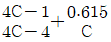
를 적용한다.)- 3.3
- 4.8
- 7.5
- 12.6
(정답률: 22%)
54. 420rpm으로 16.20kN의 하중을 받고 있는 엔드저널의 지름(d)과 길이(l)는? (단, 베어링 작용압력은 1N/mm2, 폭 지름비 l/d=2 이다.)
- d= 90mm, l = 180mm
- d= 85mm, l = 170mm
- d= 80mm, l = 160mm
- d= 75mm, l = 150mm
(정답률: 35%)
55. 지름이 10mm 인 시험편에 600N의 인장력이 작용한다고 할 때 이 시험편에 발생하는 인장응력은 약 몇 MPa인가?
- 95.2
- 76.4
- 7.64
- 9.52
(정답률: 49%)
56. 정(Chisel) 등의 공구를 사용하여 리벳머리의 주위와 강판의 가장자리를 두드리는 작업을 코킹(caulking)이라 하는데, 이러한 작업을 실시하는 목적으로 적절한 것은?
- 리벳팅 작업에 있어서 강판의 강도를 크게 하기 위하여
- 리벳팅 작업에 있어서 기밀을 유지하기 위하여
- 리벳팅 작업 중 파손된 부분을 수정하기 위하여
- 리벳이 들어갈 구멍을 뚫기 위하여
(정답률: 78%)
57. 축 방향으로 보스를 미끄럼 운동시킬 필요가 있을 때 사용하는 키는?
- 페더(feather) 키
- 반달(woodruff) 키
- 성크(sunk) 키
- 안장(saddle) 키
(정답률: 48%)
58. 맞물린 한 쌍의 인벌류트 기어에서 피치원의 공통접선과 맞물리는 부위에 힘이 작용하는 작용선이 이루는 각도를 무엇이라고 하는가?
- 중심각
- 접선각
- 전위각
- 압력각
(정답률: 53%)
59. M22볼트(골지름 19.294mm)가 그림과 같이 2장의 강판을 고정하고 있다. 체결 볼트의 허용전단응력이 36.15MPa라 하면 최대 몇 kN까지의 하중(P)을 견딜 수 있는가?
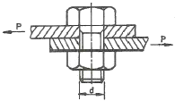
- 3.21
- 7.54
- 10.57
- 11.48
(정답률: 47%)
60. 평벨트 전동장치와 비교하여 V-벨트 전동장치에 대한 설명으로 옳지 않은 것은?
- 접촉 면적이 넓으므로 비교적 큰 동력을 전달한다.
- 장력이 커서 베어링에 걸리는 하중이 큰 편이다.
- 미끄럼이 작고 속도비가 크다.
- 바로걸기로만 사용이 가능하다.
(정답률: 56%)
4과목: 컴퓨터응용설계
61. 순서가 정해진 여러 개의 점들을 입력하면 이 모두를 지나는 곡선을 생성하는 것을 무엇이라고 하나?
- 보간(interpolation)
- 근사(approximation)
- 스무딩(smoothing)
- 리메싱(remeshing)
(정답률: 69%)
62. 플로터(plotter)의 일반적인 분류 방식에 속하지 않는 것은?
- 펜(pen)식
- 충격(impact)식
- 래스터(raster)식
- 포토(photo)식
(정답률: 64%)
63. NURBS(Non-Uniform Rational B-Spline)에 관한 설명으로 가장 옳지 않은 것은?
- NURBS 곡선식은 B-Spline 곡선식을 포함하는 일반적인 형태라고 할 수 있다.
- B-Spline에 비하여 NURBS곡선이 보다 자유로운 변형이 가능하다.
- 곡선의 변형을 위하여 NURBS곡선에서는 각각의 조정점에서 x, y, z 방향에 대한 3개의 자유도가 허용된다.
- NURBS 곡선은 자유 곡선뿐만 아니라 원추곡선까지 하나의 방정식 형태로 표현이 가능하다.
(정답률: 59%)
64. 3차원 형상의 솔리드 모델링 방법에서 CSG방식과 B-Rep 방식을 비교한 설명 중 틀린것은?(오류 신고가 접수된 문제입니다. 반드시 정답과 해설을 확인하시기 바랍니다.)
- B-rep방식은 CSG방식에 비해 보다 복잡한 형상의 물체(비행기 동체 등)를 모델링하는 데 유리하다.
- B-rep방식은 CSG방식에 비해 3면도, 투시도 작성이 용이하다.
- B-rep방식은 CSG방식에 비해 필요한 메모리의 양이 적다.
- B-rep방식은 CSG방식에 비해 표면적 계산이 용이하다.
(정답률: 61%)
65. 그림과 같이 중간에 원형 구멍이 관통되어 있는 모델에 대하여 토폴로지 요소를 분석하고자 한다. 여기서 면(face)은 몇 개로 구성되어 있는가?
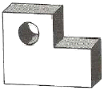
- 7
- 8
- 9
- 10
(정답률: 75%)
66. 쾌속조형(Rapid Prototyping)등에 사용되는 STL 파일의 특징에 대한 설명으로 틀린 것은?
- 평면 삼각형들의 목록만을 담고 있기 때문에 구조가 간단하다.
- 데이터 양이 많으며 데이터를 중복해서 가지고 있기도 하다.
- 굴곡진 곡면도 실제와 같이 정확하게 표현할 수 있다.
- 모델의 위상정보를 가지고 있지 않다.
(정답률: 41%)
67. 래스터 스캔 디스플레이에 직접적으로 관련된 용어가 아닌 것은?
- flicker
- Refresh
- Frame buffer
- RISC
(정답률: 61%)
68. CAD 시스템의 3차원 공간에서 평면을 정의할 때 입력 조건으로 충분치 않는 것은?
- 한 개의 직선과 이 직선의 연장선 위에 있지 않는 한 개의 점
- 일직선 상에 있지 않은 세 점
- 평면의 수직 벡터와 그 평면위의 한 개의 점
- 두 개의 직선
(정답률: 65%)
69. 3차원에서 이미 구성된 도형자료의 확대 또는 축소를 나타내는 변환행렬로 옳은 것은? (단, 행렬에서 Sx, Sy, Sz는 각각 x, y, z 방향으로의 확대 또는 축소되는 크기이다.)
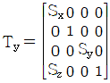
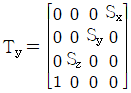
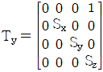
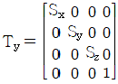
(정답률: 62%)
70. 다음 중 출력용 프린터의 해상도(resolution)를 나타내는 단위는?
- DPI
- BPC
- LCD
- CPS
(정답률: 79%)
71. 미리 정해진 연속된 단면을 덮는 표면 곡면을 생성시켜 닫혀진 부피영역 혹은 솔리드 모델을 만드는 모델링 방법은?
- 트위킹(tweaking)
- 리프팅(lifting)
- 스위핑(sweeping)
- 스키닝(skinning)
(정답률: 51%)
72. CAD시스템에서 두 개의 곡선을 연결하여 복잡한 형태의 곡선을 만들 때, 양쪽곡선의 연결점에서 2차 미분까지 연속하게 구속조건을 줄 수 있는 최소 차수의 곡선은?
- 2차 곡선
- 3차 곡선
- 4차 곡선
- 5차 곡선
(정답률: 72%)
73. 그림과 같이 P1(2,1), P2(5,2) 점을 지나는 직선의 방정식은?
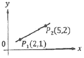
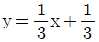
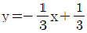
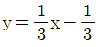
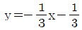
(정답률: 53%)
74. 10진수로 표시된 11을 2진수로 옳게 나타낸 것은?
- 1011
- 1100
- 1110
- 1101
(정답률: 70%)
75. 다음과 같은 원추곡선(conic curve) 방정식을 정의하기 위해 필요한 구속조건의 수는?
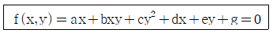
- 3개
- 4개
- 5개
- 6개
(정답률: 54%)
76. CAD시스템에서 서로 다른 CAD시스템간의 데이터 교환을 위한 대표적인 표준파일 형식이 아닌 것은?
- IGES
- ASCII
- DXF
- STEP
(정답률: 72%)
77. 베지어(Bezier) 곡선의 특징에 대한 설명으로 옳지 않은 것은?
- 곡선은 첫 조정점과 마지막 조정점을 지난다.
- 곡선은 조정점들을 연결하는 다각형의 내측에 존재한다.
- 1개의 조정점 변화는 곡선전체에 영향을 미친다.
- n개의 조정점에 의해서 정의되는 곡선은 (n+1)차 곡선이다.
(정답률: 72%)
78. CAD 프로그램 내에서 3차원 공간상의 하나의 점을 화면상에 표시하기 이해 사용되는 3개의 기본 좌표계에 속하지 않는 것은?
- 세계 좌표계(world coordinate system)
- 벡터 좌표계(vector coordinate system)
- 시각 좌표계(viewing coordinate system)
- 모델 좌표계(model coordinate system)
(정답률: 56%)
79. IGES 파일 포맷에서 엔티티들에 관한 실제데이터, 즉 예를 들어 직선 요소의 경우 두 끝점에 대한 6개의 좌표값이 기록되어 있는 부분(section)은?
- 스타트 섹션(start section)
- 글로벌 섹션(global section)
- 디렉토리 엔트리 섹션(directory entry section)
- 파라미터 데이터 섹션(parameter data section)
(정답률: 63%)
80. 형상모델링 방법 중 솔리드 모델링(Solid Modeling)의 특징에 대한 설명으로 옳지 않은 것은?
- 은선 제거가 가능하다.
- 단면도 작성이 어렵다.
- 불리언(Boolean) 연산에 의하여 복잡한 형상도 표현할 수 있다.
- 명암, 컬러 기능 및 회전, 이동 등의 기능을 이용하여 사용자가 명확히 물체를 파악할 수 있다.
(정답률: 71%)